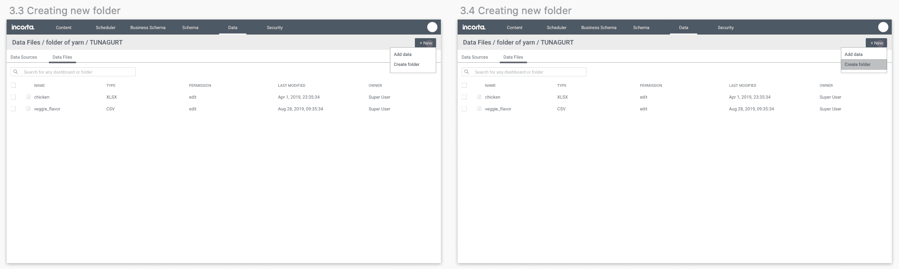
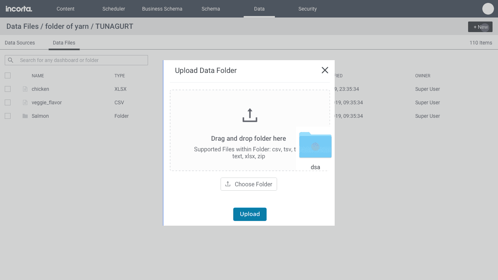
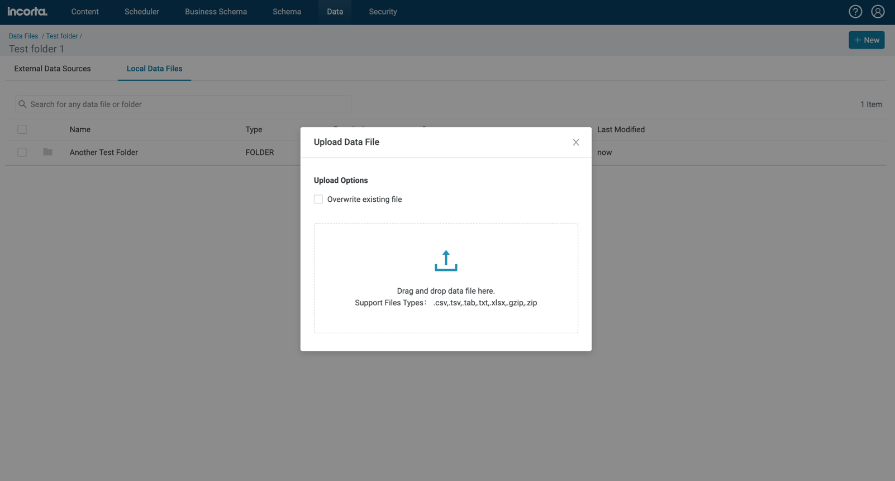
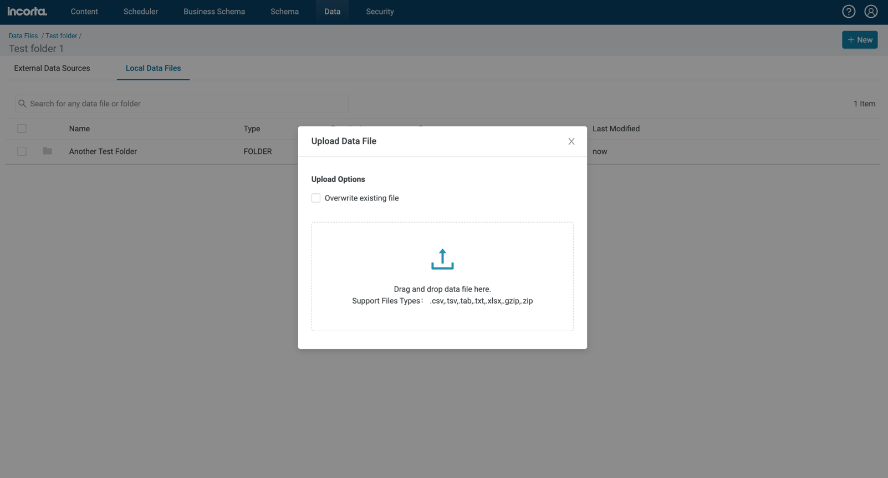

Incorta: Data File Directory
A design solution allowing for better file management in the
Incorta app
In the Data Tab of Incorta's app, users can provide data in two ways: upload CSV/XML files straight into their instance or connect to a database. One of the biggest issues that users are facing is that they are adding hundreds of data files into a root location, without capabilities of creating nested folder structures. Our current design lacked any basic directory support of renaming files, sharing, and editing.

The old Data Tab had two issues: it has not been migrated to React and did not provide a way for users to fully customize their environment.
I led the UX design efforts for this feature. I worked with the PM, the engineering team, server team, and collaborated with the lead UX designer occasionally for brainstorming and feedback.
The personas of this app are schema developers. They are a technical bunch and are responsible for bringing the data into their systems in order to create schemas. Once they build the schemas, business users can analyze their data and build visualizations.
I worked with the PMs and a few solutions architects who speak directly to these power users to learn about their struggles and frustrations. Users have trouble locating their files because there's no way to search, although we provide that ability with our other pages that have already migrated from Angular to React.
Users simply want to save time and effort by having organized files for easy sharing, finding, editing, etc.
The ability to support folder structures was a huge ask from a customer. The PM wrote up the user story and specified that this feature would span across two releases. The first release would focus on the basic functions of a directory:
The second release will address folder-specific permissions, sharing and moving of folders/files, along with other enhancements as needed.
The proposal involves redesigning the existing Data Tab to provide better support for folder structures and searching. We already have list and searchbar components used in the newer React pages of our app, so I simply added those to the new design.
The only part of our app that utilizes a directory is the Content Tab, where dashboards can be grouped into folders. However, the feature was poorly designed as we don't provide a way for users to traverse through folders and back. A breadcrumb navigation was important for this feature.

Our current half-baked breadcrumb design.
The problem with our current navigation is that users are unable to go back to a previous folder they were in, nor can they see the root location. Users would have to click the left caret each time if they wanted to go back a step. Our solution to that was to show the path leading up to the current location.
V1: The wireframe demonstrates the new breadcrumb navigation and directory design..
Users will be able to upload individual data files or whole folders.


The new design will support renaming of folders and various other functions.
After the implementation, we reviewed it in our test build. We weren't too crazy about the title of the page being the last item shown in the breadcrumb. After some feedback and brainstorm sessions, we decided to separate the title of the page from the rest of the breadcrumb path, so that it stays prominent in one location. While it seemed minor, this was an important call as we would be using this breadcrumb design to replace our half-baked on in the Content Tab and for future directories within the app.

V2: Second version with the improved breadcrumb.
This feature was a huge ask from one of our most engaged customers. They were very pleased with the enhancement because it was a huge time and effort saver. They could now share folders containing appropriate files for other users without having to manually go search for each and every file. Our customers were excited to hear that we were expanding on that design in the future release.
 


What actions are users trying to take with their data files?
Researched current trends in designing directories, and worked with PMs to learn about user needs.
Researched current trends in designing directories, and worked with PMs to learn about user needs.
Changed breadcrumb design based on feedback.
Took 2 months of design, development, and testing.
Many other customers were happy with the upgrade.
The users were delighted with the first phase. The design is consistent with the rest of our React pages and allowed users to quickly sort and share their files.
The next steps for this project is currently in the works. I am currently in the midst of designing for bulk actions and addressing folder-specific permissions.